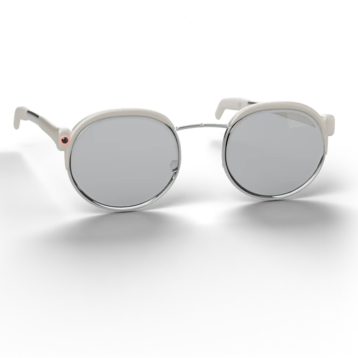
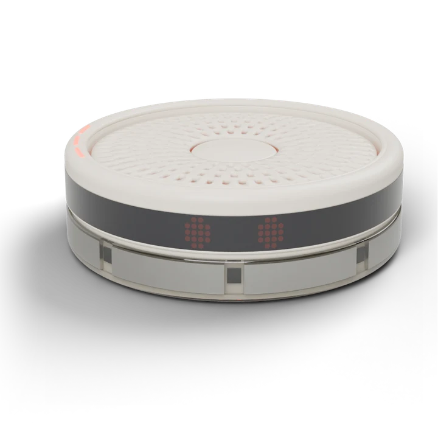
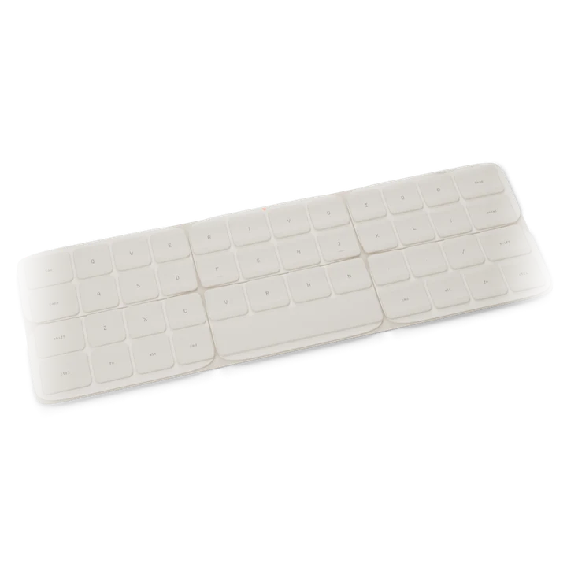
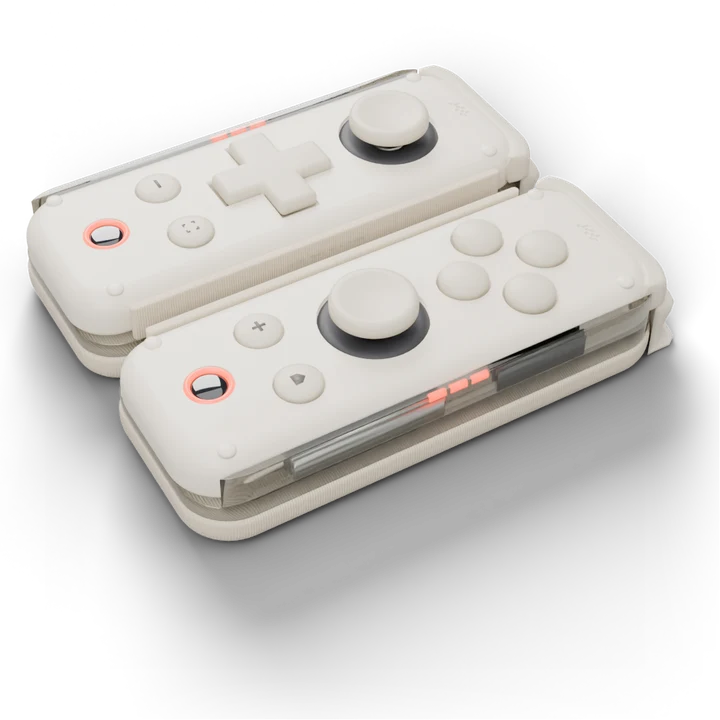
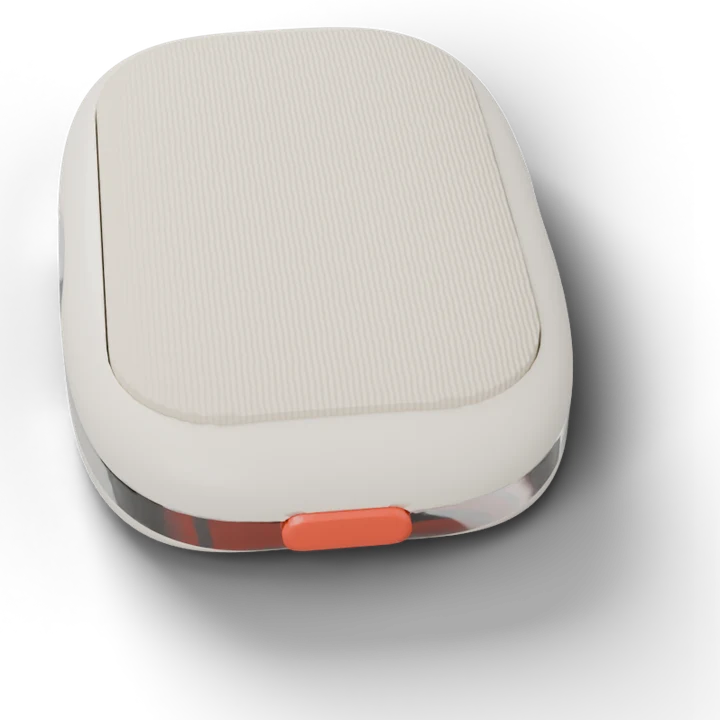
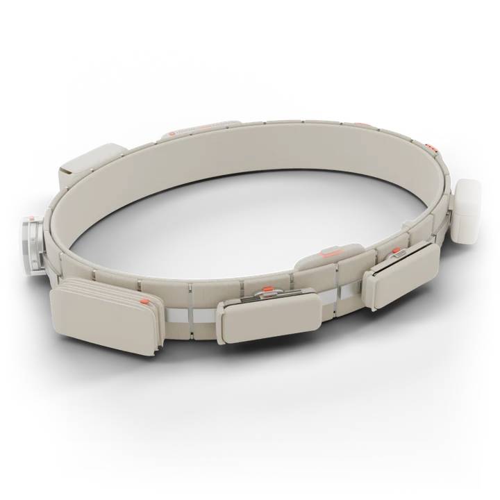

Image to comePlate: A woman walking a sunny street, glasses on, glancing up at an incoming call
It rings in your glasses. LUMEN shows who’s calling, a tap on CUE answers, and WHISPER carries both sides. Nothing to dig out of a pocket.
02 · Everyday questions

Image to comePlate: A woman walking a sunny street, glasses on, glancing up at an incoming call
It rings in your glasses. LUMEN shows who’s calling, a tap on CUE answers, and WHISPER carries both sides. Nothing to dig out of a pocket.

Image to comePlate: A woman on a park bench talking to a friend on a video call, nothing in her hands
Face to face, hands free. For a video call, WISP lifts off your hip and holds a good angle a few feet away, quietly. Your arms stay yours.
Image to comePlate: A café table, a coffee, a small camera perched facing the empty chair
Or set it down. When you’d rather prop it up, WISP perches on the table and faces you, the way you’d lean a phone against a cup.
Do we still need a phone? One slab that calls, films and sits on a table is hard to beat. ORBIT bets it can be split up without losing anything. If some people miss it, a handheld screen becomes one more module on HALO.

Image to comePlate: A woman at a long wooden table by a window, typing on a slim keyboard, no monitor in sight
Any table is your desk. The keyboard unfolds from HALO, CORE does the computing on your hip, and LUMEN puts as many screens in front of you as you want.

Image to comePlate: Close-up of a hand resting on a small remote on a desk, a ring on one finger
Point without a mouse. DEX works as a pointer and trackpad; CUE handles the quick gestures: scroll, select, dismiss.
Image to comePlate: A home office corner, a woman mid-conversation, a small camera perched on a shelf
Take the meeting. WISP perches as your camera, WHISPER keeps the call private, and the meeting floats wherever you look.
Image to comePlate: A woman on a couch, glasses on, a controller in each hand, leaning into a turn
A big screen anywhere. LUMEN fills your view and DEX splits into two controllers. The couch, a train seat, a tent.
Image to comePlate: Three friends round a coffee table, all looking at the same empty spot, laughing
Same room, same game. Friends’ glasses share one space, so the game sits on the coffee table where everyone can see it.

Image to comePlate: Close-up of fingers sliding a small battery cell out of a belt
No low-battery panic. Swap an ION cell from HALO mid-game and keep playing.
Image to comePlate: Friends at a rooftop table at dusk, all looking at each other, glasses on
Heads up, not heads down. Messages wait quietly at the edge of LUMEN. Reply with a tap on CUE, or a word to WHISPER, without leaving the conversation.
Image to comePlate: A group of friends posing on a beach, framed from a few metres up
Everyone in the shot. WISP takes the group photo from where somebody would have had to stand.
Image to comePlate: Two friends leaning together, both looking at the same point in the air
Show, don’t pass around. Share what you’re seeing into everyone’s glasses instead of handing a phone round the table.
Image to comePlate: A mother running beside a small kid on a bike in a park, both laughing
Both hands on the bike. WISP follows your kid’s first ride and films it, so you’re holding the seat, not a phone.

Image to comePlate: A family dinner table, warm light, nobody looking at a screen
Present at dinner. Everything stays docked and quiet on HALO. CUE taps once if something really needs you.
Image to comePlate: A woman on a commuter train, glasses on, looking out of the window, calm
The quiet commute. Read, reply and plan on the train with your head up: LUMEN shows it, CUE answers it.
Image to comePlate: A woman at a city crossing, glasses on, glancing down the street
Directions where you look. Walking routes appear in LUMEN as you go, so you never stop to stare at a map.
Image to comePlate: The back seat of a self-driving car, a woman typing on a slim keyboard across her lap
Ride and work. In a self-driving car the keyboard unfolds on your lap and the day starts before you arrive.